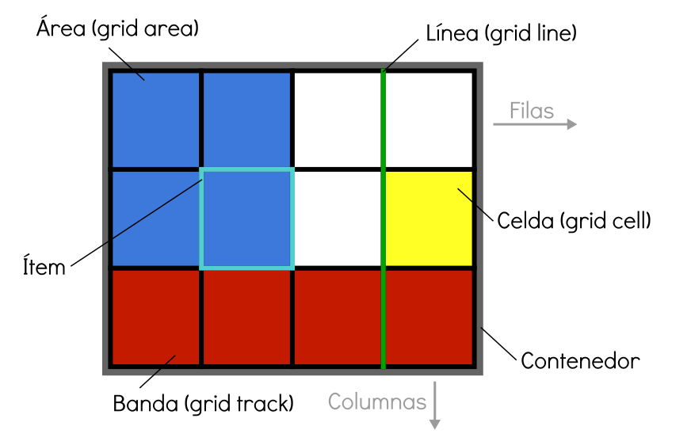

Uno de los procesos más problemáticos y frustrantes de CSS, sobre todo para novatos o principiantes, es el proceso de colocar y distribuir los elementos a lo largo de una página. Mecanismos como posicionamiento, floats o elementos en bloque o en línea, suelen ser insuficientes (o muy complejos) para crear un layout o estructuras para páginas web actuales. El sistema flexbox es una gran mejora, sin embargo, está orientado a estructuras de una sola dimensión, por lo que aún necesitamos algo más potente para estructuras web más específicas o complejas. Con el paso del tiempo, muchos frameworks y librerías utilizan un sistema grid donde definen una cuadrícula determinada, y modificando los nombres de las clases de los elementos HTML, podemos darle tamaño, posición o colocación. Grid CSS nace de esa necesidad, y recoge las ventajas de ese sistema, añadiéndole numerosas mejoras y características que permiten crear rápidamente cuadrículas sencillas y potentes de forma prácticamente instantánea. Conceptos Antes de comenzar con Grid CSS, quizás sería conveniente dominar el sistema Flexbox, ya que Grid toma la filosofía y bases de él. Para utilizar Grid CSS necesitaremos tener en cuenta una serie de conceptos que utilizaremos a partir de ahora y que definiremos a continuación  Contenedor: El elemento padre contenedor que definirá la cuadrícula o rejilla. Celda (grid cell) : Cada uno de los cuadritos (unidad mínima) de la cuadrícula. Area (grid area): Región o conjunto de celdas de la cuadrícula Ítem: Cada uno de los hijos que contiene la cuadrícula (elemento contenedor). Banda (grid track) : Banda horizontal o vertical de celdas de la cuadrícula. Línea (grid line): : Separador horizontal o vertical de las celdas de la cuadrícula. @manz,Grid css. recuperado de: https://lenguajecss.com/css/maquetacion-y-colocacion/flexbox/